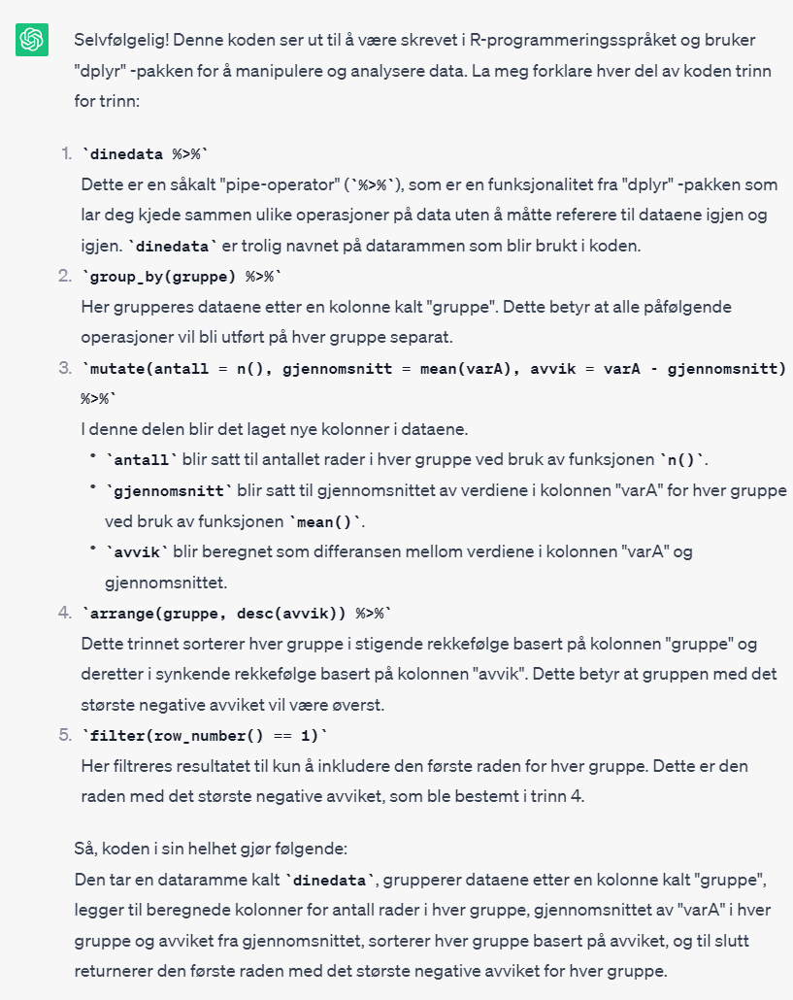

Sys.setlocale(locale='no_NB.utf8')2 En veldig kjapp intro til R
Før vi setter igang trengs det en kort introduksjon til noe grunnleggende om hvordan R fungerer. Så lærer man mer underveis, og et senere kapittel går grundigere inn i omkoding av variable. En grundigere gjennomgang av R finner du i Wickham and Grolemund (2017).
2.0.1 Et par hurtigtaster
Du skriver altså kode i script-vinduet i RStudio. For å kjøre koden kan du klikke på “Run” opp i høyre hjørne av script-vinduet. Det kan være lurt å markere det du vil kjøre før du klikker “Run” slik at du bare kjører akkurat det du har tenkt til. Man blir fort lei av å klikke på den måten. En hurtigtast er Ctlr + Enter som altså gjør det samme.
Du vil komme til å skrive ‘%>%’ ganske mange ganger etterhvert. Det er litt styrete å skrive pga hvordan tastene ligger på tastaturet ditt. En hurtigtast for dette tegnet er Ctrl + Shift + M.
Det er mange andre hurtigtaster tilgjengelig, men det er disse to du vil ha mest bruk for.
2.0.2 Problemer med æøå?
På noen datamaskiner vil æøå vises feil. Det er jo veldig irriterende. R henter informasjon fra operativsystemet ditt for å vite hva slags tegnsetting som skal brukes. Noen ganger skjer det feil. Her er en kode for å sette tegnsetting til norsk:
Det kan hende du må kjøre denne koden hver gang du starter R.
2.1 Objektorientert
I de innledende kapitlene ble det vist hvordan man leser inn data i R og dataene ble lagt i et “objekt”. R er bygd opp rundt å bruke slike objekter i den forstand at alt man jobber med (typisk: datasett) ligger i objekter.
Du kan tenke på objekter som en boks som det står et navn på. Ofte er det bare et datasett oppi boksen, men det kan også være flere ting. Det finnes derfor flere typer objekter. Vi skal primært jobbe med datasett, og slike objekter er av typen “data.frame”. De kan også være av typen “tibble”, men det er for alle praktiske formål på dette nivået akkurat det samme som “data.frame”. Men objekter kan også inneholde resultater fra analyser, som f.eks. grafikk, tabeller eller regresjonsresultater. Man kan også legge enkelttall, vektorer og tekststrenger i objekter.
Noen ganger vil et objekt inneholde flere forskjellige ting. Et eksempel er resultat fra regresjonsmodeller som både vil inneholde koeffisienter, standardfeil, residualer, en del statistikker, men også selve datasettet. Men for å se på output er det funksjoner som trekker ut akkurat det vi trenger, så du trenger sjelden forholde deg til hvordan et slikt objekt er bygd opp. Men du kan tenke på det som en velorganisert boks med masse mindre rom oppi.
Men poenget er: Alt du jobber med i R er objekter. Alle objekter har et navn som du velger selv. Du kan legge hva som helst i et objekt. Du kan ikke ha to objekter med samme navn, og hvis du lager et objekt med et navn som eksisterer fra før overskriver du det gamle objektet.
2.2 Funksjoner
Alt man gjør i R gjøres med “funksjoner”, og man bruker funksjonene på objekter eller deler av objekter. Funksjonenen har et navn og etterfulgt av en parentes slik som f.eks. dinfunksjon(...). Funksjonen starter og slutter med en parentes. Du kan tenke på funksjoner som en liten maskin der du putter noe inn, og så kommer noe annet ut. Det du putter inn skal står inni parentes. Det som kommer ut kan du enten legge i et eget objekt eller la det skrives til output-vinduet.
Det du legger inn i funksjonen - altså inni parentesn - kalles “argumenter”. Hvert argument har et navn og du skal normalt oppgi i hvert fall hvilket datasett funksjonen skal brukes på. Argumentet for data er nettopp data = og så oppgis navnet på det objektet dataene ligger i. En god del slike argumenter har navn som er standardisert på tvers av funksjoner, og data = er et eksempel på dette.
I tillegg kan det være en rekke andre argumenter som vi kommer tilbake til i de ulike funksjonene vi bruker. Et poeng er viktig å presisere: argumentene har også en forventet rekkefølge. Man kan også oppgi argumentene uten å angi navnet hvis de kommer i riktig rekkefølge. For eksempel vil en funksjon for regresjon ha den forventede rekkefølgen: 1) Spesifisering av utfallsvariabel og forklaringsvariable på en form som heter “formula”, deretter og 2) Angitt objektnavnet til dataene. Så kan det være andre argumenter i tillegg. Man kan godt oppgi argumentene i annen rekkefølge, men da er man nødt til å bruke argumentnavnet slik at R forstår hva som er hva.
2.3 R-pakker
Når man installerer R har man svært mye funksjonalitet tilgjengelig uten videre. Dette kalles “base R”, altså basic installasjon og funksjonalitet. Men R er i praksis basert på å bruke såkalte “pakker”. Dette er funksjoner som utvider R sin funksjonalitet. Så mens “base R” tilbyr infrastrukturen, så er de ulike pakkene laget for spesifikke oppgaver.
R-pakker er et helt økosystem av funksjonalitet som dekker det aller meste du kan finne på å gjøre, fra bittesmå oppgaver, til avansert statistikk og maskinlæring, til hele systemer for dataanalyse. Det finnes mange hundre R-pakker tilgjengelig, og disse ligger på en server som heter CRAN. Hvis du vil se på hva som finnes kan du se på oversikten over tilgjengelige pakker. For nye brukere av R vil dette fremstå som ganske kaotisk. Det finnes også oversikter der viktigste pakker innenfor ulike typer analyse er gruppert slik at man lettere skal kunne finne frem. Dette kalles Task Views. Men du trenger ikke forholde deg til slike oversikter på en god stund ennå. Du får beskjed om hvilke pakker du trenger fortløpende, og det er et begrenset antall.
For å installere en pakke må du vite hva pakken heter og datamaskinen din må være koblet til internett. Funksjonen install.packages:
install.packages("pakkenavn")Det hender at man får en feilmelding når man prøver installere en pakke. Det er noen veldig vanlige grunner til feilmeldinger som skal være rimelig enkle å finne ut av selv:
- Du har stavet navnet på pakken feil. Passe på særlig små og store bokstaver.
- Pakken krever at du har noen andre pakker installert fra før. I så fall vil disse pakkenes navn står i feilmeldingen. Installer disse på samme måte først og prøv igjen.
- Noen andre pakker trengs å oppdateres for at den nye pakken skal virke. Oppdater alle pakker og prøv på nytt.
- Din R installasjon må oppdateres. Hvis det er lenge siden du installerte R, så installer på nytt og prøv igjen. Da må alle andre pakker også installeres på nytt.
Når du installerer pakker får du noen ganger spørsmål om du vil installere “from source”. Som hovedregel kan du velge nei. “From source” betyr at det finnes en ny versjon som ikke er ferdig kvalitetssjekket på CRAN, men som er tilgjengelig. Du trenger neppe det aller, aller siste av funksjonalitet, så “nei” holder.
Når en pakke er installert på datamaskinen din er disse funksjonalitetene tilgjengelig i R, men ikke helt automatisk. Pakkene ligger i en egen mappe i filstrukturen på datamaskinen og R vet selvsagt hvor dette er. For at pakkene skal være tilgjengelig for deg må du fortelle R at du skal bruke en slik pakke. Vi sier at vi “laster en pakke” (engelsk: “load”) og da er disse funksjonene tilgjengelig for deg i hele R-sesjonen. Hvis du restarter R, så må du laste pakkene på nytt før du kan fortsette der du slapp.
For dette kurset skal vi bruker flere pakker og de kan installeres samlet med koden nedenfor. Hvis du har behov for andre pakker enn dette (f.eks. at vi har glemt å ta med noe i koden), så installerer du det som er angitt på samme måten.
install.packages( c("tidyverse", "haven", "gtsummary", "modelsummary", "stargazer",
"ggthemes", "ggforce",
"labelled", "memisc",
"causaldata", "gapminder")
)Installering av pakker gjør du bare én gang. Hvis du oppdaterer R til en nyere versjon må du imidlertid installere pakkene på nytt. Det er alltid en fordel å ha oppdatert software.
Du må derimot laste en pakke hver gang du starter R på nytt. Det betyr at du gjør pakkens funksjoner tilgjengelig for denne arbeidsøkten. Du laster en pakke med funksjonen library.
library(pakkenavn)Hvis en kode ikke fungerer og du får feilmelding kan dette være grunnen: du har glemt å laste pakken eller pakken er ikke installert på maskinen din.
En annen grunn til at koden ikke fungerer kan være at det er “konflikt” mellom pakker du har lastet. Hvis du bare laster alle pakker du vet du bruker (og noen ekstra som noen på internett har foreslått), så kan det hende at disse pakkene skaper trøbbel for hverandre. Det er typisk at noen funksjoner har samme navn i ulike pakker, og R bruker da en annen funksjon enn du tror. Så da er rådet: ikke last masse pakker du ikke vet hva er. I det etterfølgende introduseres ulike pakker fortløpende og du får da vite hva de brukes til. Utvalget av pakker er dessuten slik at det ikke skal være noen slike konflikter. De pakkene vi skal bruke jobber veldig fint sammen. (Se avsnitt nedenfor om dialekter).
Men det er altså et poeng at du må vite hva slags funksjonalitet de ulike pakkene har, og hvilke du faktisk trenger.
2.4 R-dialekter
De funksjonene som følger med grunnleggende installasjon av R kalles altså “base R” eller bare “base”. Dette er grunnstrukturen for programmeringsspråket. Man kan gjøre svært mye analyser med bare bruk av base R, og en god del lærebøker i statistikk og dataanalyse er lagt opp til hovedsakelig bruk av base.
Noen R-pakker inneholder ikke bare enkeltfunksjoner, men nesten et helt programmeringsspråk i seg selv. Noen slike pakker er egentlig en hel samling av veldig mange andre pakker som er integrert i hverandre og fungerer sømløst sammen. Det er lurt å holde seg innenfor samme “dialekt” da man ellers kan bli veldig forvirret. I det følgende skal vi holde oss til dialekten “Tidyverse”, som er en dominerende variant i R.
Merk at det finnes altså flere dialekter som er spesialiserte for spesifikke formål. Et eksempel er {data.table} som er lynrask for store datasett, {caret} som gir et rammeverk for maskinlæring, og {lattice} som er et eget grafikk-system. Det finnes enda flere. Dette gjør at det kan være vanskelig å søke på nettet etter løsninger fordi du kan få svar (som funker!) i en annen dialekt enn den du kan.
2.5 Tidyverse
Når man laster pakken {tidyverse} laster man egentlig flere pakker som også kan lastes individuelt. Merk at “tidy” betyr jo “ryddig” og hensikten her er et språk som er så ryddig og logisk som mulig. Dette innebærer også at det er innarbeidet en del prinsipper for datastruktur og datahåndtering som er redegjort for i Wickham (2014). Full oversikt over pakkene som inngår i Tidyverse finner du på deres hjemmeside. Men du trenger ikke sette deg inn i alt det for å bruke softwaren.
2.5.1 Datahåndtering: {dplyr}
Grunnleggende datahåndtering inkluderer først og fremst å endre variable ved omkoding, utregninger eller transformasjoner. Pakken {dplyr} inneholder de nødvendige verktøy for dette.
De grunnleggende funksjonene vi bruker kan ordnes sekvensielt og bindes sammen med en “pipe”. Norsk oversettelse vil være “rørlegging”. Dette er litt rart og uvant, men i første omgang kan du se for deg at det er en flyt av data fra venstre side mot høyre side. Du kan altså gjøre noe med data og “deretter gjøre” noe mer med de dataene du har endret. Vi kommer tilbake til dette nedenfor.
Vi skal bruke et bittelite datasett for å demonstrere. Det er seks observasjoner og to variable. Observasjonene tilhører gruppe a, b, eller c, og variabelen “varA” har en tallverdi. Dataene ser ut som følger:
dinedata gruppe varA
1 a 3
2 b 5
3 b 2
4 a 4
5 c 3
6 c 72.5.1.1 Grunnleggende verb
For å endre variable brukes funksjonen mutate, som har to argumenter: hvilket datasett som skal endres på, og spesifikasjon av gitte variable.
Syntaksen er slik at man starter med å angi objektnavnet med dataene, men her skal det ikke skrives data = av grunner vi kommer tilbake til straks. Deretter skriver man navnet på ny variabel “erlik” utregning av ny verdi. I det følgende lages en ny variabel “varB” som er 2 ganger varA:
mutate(dinedata, varB = 2*varA) gruppe varA varB
1 a 3 6
2 b 5 10
3 b 2 4
4 a 4 8
5 c 3 6
6 c 7 14Man kan også overskrive en eksisterende variabel på samme måte.
Vi kan også velge bort variable med select. Merk at det som ble gjort med mutate ovenfor ikke er lagt i et nytt objekt, så det er bare printet til konsollen. Objektet “dinedata” er altså ikke endret. I følgende kode bruker vi select til velge å bare beholde “varA”.
select(dinedata, varA) varA
1 3
2 5
3 2
4 4
5 3
6 7Vi kan slette variable ved å sette minustegn foran variabelnavnet som følger:
select(dinedata, -varA) gruppe
1 a
2 b
3 b
4 a
5 c
6 c2.5.1.2 Pipe %>% med {magrittr}
Vi bruker en “pipe” for å få lettere lesbare koder og slippe å lage mange nye objekter hele tiden. Vi kan binde sammen flere verb i en arbeidsflyt der man kun angir objektnavnet én gang.
dinedata %>%
mutate(varB = 2*varA) %>%
select(-varA) gruppe varB
1 a 6
2 b 10
3 b 4
4 a 8
5 c 6
6 c 14Operatoren %>% betyr “gjør deretter”. Kode ovenfor kan dermed skrives i klartekst som følger:
- start med datasettet dinedata og “gjør deretter:”
- lag en ny variabel med navn varB som er 2 ganger verdien av variabelen varA, og “gjør deretter:
- slett variabel varA
Hvis vi vil legge resultatet i et nytt objekt for å bruke det videre (og det vil vi nesten alltid!) så spesifiseres det med å sette nyttobjekt <- helt først som følger:
dinedata2 <- dinedata %>%
mutate(varB = 2*varA) %>%
select(-varA)2.5.1.3 Logiske operatorer
I mange sammenhenger setter man hvis-krav. F.eks. at man skal gi en ny variabel en verdi hvis en annen variabel har en bestemt verdig - og en annen verdi hvis ikke. Det kan også gjelde kombinasjoner av variable og verdier. Slike krav er da enten TRUE eller FALSE.
Her er grunnleggende logiske operatorer.
| Uttrykk | Kode |
|---|---|
| er lik | == |
| er ikke lik | != |
| og | & |
| eller | | |
| større/mindre enn | > eller < |
| større/mindre enn eller er lik | <= eller >= |
For å kode om kategoriske variable trenger vi disse. La oss bruke mutate til å gruppere sammen gruppene “a” og “b” ved å gjøre om alle “a” til “b”. Da bruker vi funksjonen ifelse som har syntaksen: ifelse(krav, verdi hvis TRUE, verdi hvis FALSE). Altså: først kravet, og alle observasjoner som fyller dette kravet får en verdi, mens alle andre får en annen verdi. Her er en kode som sjekker hvem som er i gruppe “a”, og gjør alle disse om til “b”, og resten beholder verdiene fra variabelen “gruppe”.
dinedata %>%
mutate(gruppe2 = ifelse(gruppe == "a", "b", gruppe)) gruppe varA gruppe2
1 a 3 b
2 b 5 b
3 b 2 b
4 a 4 b
5 c 3 c
6 c 7 cLogiske krav kan også kombineres med & og | og også med parenteser for mer kompliserte krav. Her er et eksempel som omkoder basert på verdier på to variable for å lage en tredje variabel:
dinedata %>%
mutate(gruppe2 = ifelse(gruppe == "a" & varA < 5, "a5", "andre")) gruppe varA gruppe2
1 a 3 a5
2 b 5 andre
3 b 2 andre
4 a 4 a5
5 c 3 andre
6 c 7 andre2.5.1.4 Flere verb
Logiske operatorer brukes også til å filtrere dataene, altså å beholde eller slette rader som oppfyller visse krav. Her er en kode som beholder alle observasjoner om ikke tilhører gruppe “a”:
dinedata %>%
filter(gruppe != "a") gruppe varA
1 b 5
2 b 2
3 c 3
4 c 7summarise aggregerer resultater i et datasett. Man må da manuelt oppgi hvordan man ønsker summere opp med funksjoner som n(), sum() osv. Her er et eksempel som summerer opp med antall observasjoner, og for en variabel regner ut totalsummen for hele datasettet, gjennomsnittet og standardavviket.
dinedata %>%
summarise(antall = n(), totalt = sum(varA), gjennomsnitt = mean(varA), standardavvik = sd(varA)) antall totalt gjennomsnitt standardavvik
1 6 24 4 1.788854Du synes kanskje det virker litt tungvint å lage oppsummeringer på denne måten? Det burde da finnes en egen funksjon som bare spytter ut en standard oppsummering uten å skrive så mye kode! Det gjør det selvsagt, så dette kommer vi tilbake til i del 2 for deskriptive teknikker.
Man kan også lage oppsummeringer for ulike grupper i datasettet. Funksjonen group_by grupperer dataene slik at når man bruker summarise etterpå, så blir resultatene per gruppe. Her er samme oppsummering som ovenfor, men gruppert:
dinedata %>%
group_by(gruppe) %>%
summarise(antall = n(), totalt = sum(varA), gjennomsnitt = mean(varA), standardavvik = sd(varA)) # A tibble: 3 × 5
gruppe antall totalt gjennomsnitt standardavvik
<chr> <int> <dbl> <dbl> <dbl>
1 a 2 7 3.5 0.707
2 b 2 7 3.5 2.12
3 c 2 10 5 2.83 Merk at når et datasett først er gruppert, så vil alle utregninger fortsette å være gruppert helt til du legger til ... %>% ungroup().
Merk at summarise gjør at man bare får ut de aggregerte tallene. Noen ganger trenger man å inkludere en aggregert sum i de opprinnelige dataene. Et eksempel er hvis man vil regne ut for hver observasjon om den er over eller under gjennomsnittet i gruppen (eller totalt). Det følgende eksempelet lager nye variable med antall i gruppen og gjennomsnittet, regner avvik fra gjennomsnittet for hver observasjon og så “dummy” for om observasjonen er over gjennomsnittet eller ikke.
dinedata %>%
group_by(gruppe) %>%
mutate(antall = n(), gjennomsnitt = mean(varA),
avvik = varA - gjennomsnitt,
over_snittet = ifelse(avvik > 0, 1, 0)) # A tibble: 6 × 6
# Groups: gruppe [3]
gruppe varA antall gjennomsnitt avvik over_snittet
<chr> <dbl> <int> <dbl> <dbl> <dbl>
1 a 3 2 3.5 -0.5 0
2 b 5 2 3.5 1.5 1
3 b 2 2 3.5 -1.5 0
4 a 4 2 3.5 0.5 1
5 c 3 2 5 -2 0
6 c 7 2 5 2 1Resultatene kommer ut i samme rekkefølge som de var fra før selv om dataene er gruppert. Noen ganger trenger vi også å sortere dataene med funksjonen arrange. Akkurat her kan sortering være greit bare for å få et ryddigere output.
dinedata %>%
group_by(gruppe) %>%
mutate(antall = n(), gjennomsnitt = mean(varA),
avvik = varA - gjennomsnitt,
over_snittet = ifelse(avvik > 0, 1, 0)) %>%
arrange(gruppe)# A tibble: 6 × 6
# Groups: gruppe [3]
gruppe varA antall gjennomsnitt avvik over_snittet
<chr> <dbl> <int> <dbl> <dbl> <dbl>
1 a 3 2 3.5 -0.5 0
2 a 4 2 3.5 0.5 1
3 b 5 2 3.5 1.5 1
4 b 2 2 3.5 -1.5 0
5 c 3 2 5 -2 0
6 c 7 2 5 2 1Ovenfor ser du eksempler på at flere funksjoner settes sammen med “pipe”, %>%. Man kan sette sammen så mange slike man vil, men det er en fordel å ikke ha så mange at man mister oversikten: da bør du heller dele opp og lage noen nye objekter som mellomtrinn. Merk at i en slik rekke av funksjoner så utføres operasjonene i rekkefølge. Hvis du f.eks. lager en ny variabel kan du bruke den til å filtere etterpå, men ikke før du har laget den.
Her er et eksempel der vi ønsker å få ut den observasjonen i hver gruppe som har høyeste positive avvik fra gjennomsnittet. Da sorteres det først på både gruppe og avvik, men merk at for avviket vil vi ha det sortert fra høyeste verdi til laveste verdi som angis med desc(avvik). (Funksjonen desc er forkortelse for “descending”, altså synkende). Deretter filtreres det ved å plukke ut den første observasjonen i hver gruppe, og til dette brukes en funksjon som nummererer radene i hver gruppe row_number().
dinedata %>%
group_by(gruppe) %>%
mutate(antall = n(), gjennomsnitt = mean(varA),
avvik = varA - gjennomsnitt) %>%
arrange(gruppe, desc(avvik)) %>%
filter(row_number() == 1)# A tibble: 3 × 5
# Groups: gruppe [3]
gruppe varA antall gjennomsnitt avvik
<chr> <dbl> <int> <dbl> <dbl>
1 a 4 2 3.5 0.5
2 b 5 2 3.5 1.5
3 c 7 2 5 2 Det er mulig det ovenstående ikke fremstår veldig nyttig. Men poenget er å introdusere noe grunnleggende om hvordan R og tidyverse fungerer. Det gjør det lettere å forstå det etterfølgende kapitlene - som er konkret nyttige.
2.5.1.5 Lagre data
Du kan som et utgangspunkt tenke at du ikke skal lagre data på disk unntatt det originale datasettet. Scriptet ditt (evt. flere script) starter med å lese inn dataene i R og gjør så alt du trenger av databearbeiding og analyser fra start til slutt. På den måten har du også sikret at du har reproduserbare script som både dokumenterer jobben du gjør og muliggjør at andre kan ettergå analysene. Dette er veldig viktig for alt vitenskapelig arbeid.
Hvis du likevel trenger å lagre data til disk, så bør det primært være fordi det tar for lang tid å kjøre gjennom fra start. Med store datasett, kompliserte operasjoner og tidkrevende estimeringer kan det være et reelt behov.
I slike tilfeller bør du lagre datasett i .rds-formatet fordi det er veldig greit å lese inn igjen. Det er R sitt eget format.
saveRDS(dinedata, "data/dinedata_temp.rds")Hvis du skal lagre et bearbeidet datasett permanent (f.eks. hos sikt.no) for å dele med andre, så er det helt andre prosedyrer som gjelder særlig med tanke på dokumentasjon og at filene skal være software-uavhengige. Da vil csv-format ofte være å foretrekke hvis dokumentasjonen og kodelister er på hensiktsmessig format.
write_csv(dinedata, "data/dinedata_temp.csv")Det kan være andre grunner til å lagre i helt andre formater. R støtter mange forskjellige, men du må la behovet styre hvilket format du velger. Foreløpig kan du tenke at du primært bruker .rds. Bare hvis du bare skal skal lagre et datasett permanent skal du bruker .rds. For å bruke noe annet trenger du en god grunn.
2.5.2 Grafikk: {ggplot2}
“Base R” har en del innebygde funksjoner for å lage grafikk som vi ikke dekker her. Grunnen til dette er at vi vektlegger funksjonen fra tidyverse ggplot. Det er noen viktige grunner til dette:
ggplotfungerer det sømløst med arbeidsflyten vi har vist overggploter en fullstendig gramatikk for all slags grafiske fremstillinger av data. Vi ser på det grunnleggende her, men dette kan også brukes til å lage 3D-fremstillinger, kart og animasjoner og mye mer.1ggplotgir ikke bare funksjonelle plot, men også i professjonelt publiserbar kvalitet. Selv hvis forlag har sære krav til fonter, fargebruk, dimensjoner og formater, så kan det fikses iggplot. Dessuten blir det pent.
Første kapittel om deskriptiv statistikk handler om grafikk og vi går inn i detaljene der etterhvert som det trengs der.
Et viktig moment i ggplot er at det er lagdelt og hvert lag skilles med + på en måte som ligner på “pipe”. Man kan så legge på flere lag oppgå det første laget. En vanlig feilmelding i starten er at man bruker %>% når det skulle vært +.
2.5.3 Import av data: {haven}
R kan importere det aller meste av dataformater, men spesielt for samfunnsvitenskapen er noen formater som primært er brukt i samfunnsvitenskap. Det gjelder Stata, SPSS og SAS. Pakken {haven} er en del av tidyverse og tar seg av dette. Dette er forklart nærmere i kapittelet om import av data.
2.6 Andre nyttige ting
2.6.1 Hjelpfiler / dokumentasjon
Dokumentasjonen i R er ofte ganske vanskelig å lese når man ikke er så god (ennå) i å bruke R. Det tar rett og slett litt tid å bli vant til hvordan ting fungerer. Hjelpfilene er skrevet slik at de er lette å finne frem i for erfarne brukere, men du er kanskje ikke der riktig ennå? Her gis en liten introduksjon for å hjelpe deg til å komme igang. Men ellers vil det meste du trenger å kunne forklares fortløpende etterhvert som funksjonene introduseres. Så foreløpig er rådet å ikke stresse med å finne ut av dette ennå. Men det er greit å vite at de finnes!
Alle R-pakker kommer med egne dokumentasjonsfiler, og det er en slik fil til hver funksjon. Denne åpnes med kommandoen ? foran navnet på funksjonen. For å se nærmere på funksjonen for å lese inn csv-filer, read.csv blir det altså ?read.csv. Hjelpfilen åpens i en egen fane i Rstudio.
Noen ganger er det flere funksjoner som er varianter av hverandre som står i samme dokumentasjon. F.eks. vil dokumentasjonen for read.csv også inneholde read.table, read.delim og et par andre. De har samme argumenter og struktur, og altså samme dokumentasjon.
Hjelpfiler har en fast struktur. Under overskriften Usage står koden med angitte forvalg for funksjonen(e). Hvis man ikke angir annet, så er det disse argumentene som brukes. Det gjør at man ofte ikke behøver å spesifisere så mye kode hver gang. Hvis man ønsker å gjøre noe annet må man imidlertid angi de relevante argumentene.
Under overskriften Arguments vil det stå spesifisert hva hvert argument gjør, og ofte angitt hvilke verdier som er gyldige å angi.
Under overskriften Details vil det gjerne være noe nærmere forklart, gjøre oppmerksom på spesielle utfordringer etc.
Under overskriften Value kan det stå noe mer om hva som kommer ut av funksjonen. Dette kan være hva slags objekt det blir eller andre ting.
Under overskriften See Also vil det være referanser til andre funksjoner som er relevante, enten alternativer eller tilleggsfunksjoner etc.
Overskriften Examples er gjerne den mest nyttige. Det er rett og slett noen korte kodesnutter som illustrerer bruken.
2.6.1.1 Vignetter
Alle R-pakker publiseres på en server, CRAN, og hver pakke har sin egen side. Du kan gå inn på denne direkte. Her er lenken til tidyverse på CRAN. Under overskriften Dokumentation vil det være en lenke til en referansemanual, som er den samme som når du bruker ? i R, men her får du alt tilhørende pakken i en samlet pdf-fil.
For mange pakker vil deg også være lenker til “Vignettes”. Disse er gjerne mer utførlige tekster som forklarer pakkens struktur og viser bruk. Disse er gjerne de mest nyttige for vanlige brukere. Noen ganger er det egne nettsider for disse pakkene og vignettene. Det er lenket til flere slike i det etterfølgende.
2.6.2 Bruke pakker uten å laste dem
Det hender at man trenger å bruke en funksjon fra en spesifikk pakke én gang og derfor ikke har behov for å laste pakken. Som nevnt ovenfor hender det at funksjoner har samme navn i ulike pakker slik at det finnes en konflikt der R kan komme til å bruke en annen funksjon enn du hadde tenkt. Det burde ikke være et problem i noe av det som dekkes i dette heftet, men kan være greit å vite likevel.
En funksjon fra en spesifikk pakke kan angis med pakkenavn::funksjon(). Her er et eksempel der man eksplisitt angir å bruke funksjonen summarise fra pakken {dplyr}.
dplyr::summarise(dinedata, antall = n(), snitt = mean(varA)) antall snitt
1 6 42.6.3 Få hjelp av chatGPT
Det er mye snakk om kunstig intelligens for tiden, og AI er overalt. En av de tingene som AI-verktøy som chatGPT faktisk er god på er å skrive kode i mange språk, deriblant R. Det er imidlertid ingenting ved chatGPT som gjør at du ikke trenger å kunne skrive kode selv.2 Du må nemlig vite om løsningen gjør det du faktisk ønsker.
Effektiv bruk av chatGPT innebærer at du kan formulere promptet godt. For å få til det bør du derfor vite hva du driver med. Du trenger også kunnskap og erfaring for å se om kodeforslaget ser rimelig ut, og vurdere om løsningen bruker riktige pakker. Det er ofte lurt å spesifisere at du vil ha en løsning med tidyverse eller andre spesifikke pakker. Oppfølgingsspørsmål kan også være nødvendig.
Du må aldri bruk kode fra chatGPT (eller andre verktøy) uten at du forstår hva koden faktisk gjør. Det kan innebære at du må teste koden på dine data grundig. Det krever også ferdigheter. Du må rett og slett ha et godt grunnlag for å forstå koden. I mellomtiden kan du godt bruke chatGPT til å lære deg R.
Hvis du skal bruke chatGPT så bør du starte med å bruke det til å forstå instruksjoner du har problemer med. Prøv ut med følgende prompt:
Kan du forklare følgende kode?
dinedata %>%
group_by(gruppe) %>%
mutate(antall = n(), gjennomsnitt = mean(varA),
avvik = varA - gjennomsnitt) %>%
arrange(gruppe, desc(avvik)) %>%
filter(row_number() == 1)
Du kan også bruke chatGPT til å finne feil i koden du ikke klarer å finne ut av selv. Du kan legge til en “kontekst” og be chatGPT om å finne feilen som gjør at du ikke får det resultatet du forventer. Prøv ut med følgende prompt:
Jeg ønsker å få aggregerte statistikker for et datasett, men det blir ikke riktig. Jeg ønsker å få en linje per gruppe, men resultatet gir aggregering per observasjon i stedet for en linje per gruppe. Kan du finne feilen i følgende kode?
dinedata %>%
group_by(gruppe) %>%
mutate(antall = n(), gjennomsnitt = mean(varA),
avvik = varA - gjennomsnitt) %>%
arrange(gruppe, desc(avvik)) %>%
filter(row_number() == 1)Merk at chatGPT da vil foreslå en løsning, men det kan godt hende du får et litt annet svar enn det som er gjengitt ovenfor. Det er ikke gitt at den forstår problemet ditt korrekt og løsningen er heller ikke nødvendigvis riktig!
For å få et godt svar er det viktig at du i promptet gir en god beskrivelse av konteksten, som innebærer hva du ønsker å gjøre, hva resultatet blir og hva du tror er feil. For at dette skal fungere godt trenger du altså å forstå problemet ditt og beskrive det så tydelig som mulig. Så må du teste løsningen på din egen datamaskin og sjekke at det faktisk fungerer.
Wickham, Hadley. 2014. “Tidy Data.” Journal of Statistical Software 59. https://doi.org/10.18637/jss.v059.i10.
Wickham, Hadley, and Garrett Grolemund. 2017. R for Data Science. Beijing, China: https://r4ds.had.co.nz/index.html; O’Reilley.